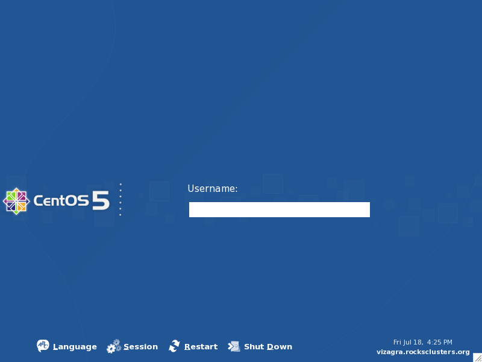
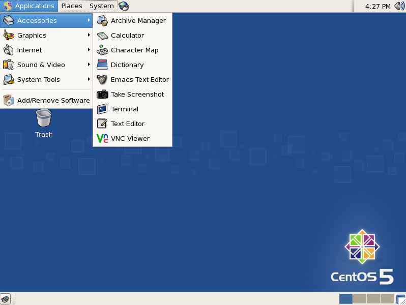
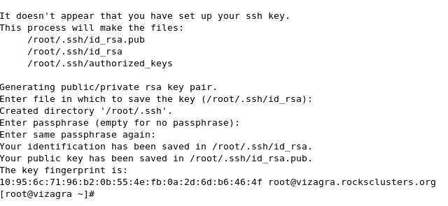

Viz Roll: Users Guide: 
| ||
|---|---|---|
| Prev | Chapter 3. Installing | Next |
After the frontend is installed and booted, you'll see an X11-based login screen, as shown below. Login as 'root' using the password you supplied during the frontend installation.

Once the root account GNOME session starts use the menus to open a new terminal window.

Since this is the first root login you will send to set up your ssh key. This is identical to the standard behavior in Rocks, however, since you are using the Viz Roll the first login is graphical rather than text mode. Hit return to accept the default value for the location of the key (/root/.ssh/id_rsa), next enter the passphrase you wish to use for the root SSH key.
